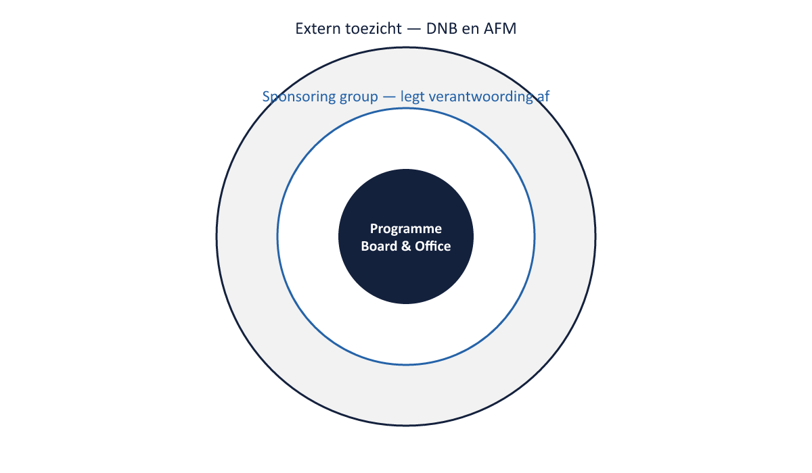
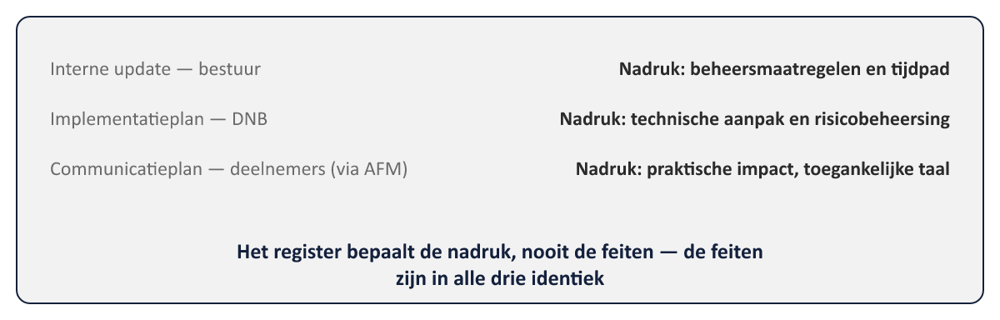

Sheet 1Titel
Project- en Programmamanagement
Niveau 3 · Deel 24: Programma’s onder toezicht
Sheet 2Wat verandert onder toezicht
Alles uit niveau 1-2 blijft van toepassing
Nieuw: een externe laag met wettelijke bevoegdheden
Sheet 3DNB
Prudentieel toezicht — financiële soliditeit, stabiliteit
Materieel toezicht — overig, “resttoezicht”
Sheet 4AFM
Gedragstoezicht — informatie aan deelnemers
Correct, duidelijk, tijdig, evenwichtig
Toetst het communicatieplan
Sheet 5Twee toezichthouders, samenwerkend
Gezamenlijke, periodieke uitvraag bij de sector
Gedeelde monitoring — twee perspectieven, niet één
Sheet 6Verantwoording: een extra laag

Implementatieplan → DNB
Communicatieplan → AFM
Sheet 7Een toezichthouder is geen gewone stakeholder
Macht/belang-matrix (niveau 1): vrijwel altijd hoge macht
Kan aanwijzingen geven, maatregelen opleggen
Sheet 8Registerwisseling
Zelfde feiten, andere nadruk, afgestemd op het gehoor
Bestuur · toezichthouder · medewerkers · deelnemers
Sheet 9De kernregel
Het register bepaalt de nadruk, NOOIT de feiten

Sheet 10Registerwisseling of misleiding?
Nadruk verschuiven: legitiem
Feiten weglaten: misleiding — en bij een toezichthouder een overtreding
Sheet 11Assurance onder toezicht
Toezichthouder = externe derde lijn
Eigen derde lijn moet het zelf al vinden, vóór de toezichthouder dat doet
Sheet 12Toegepast: de Stelselovergang
Implementatieplan (DNB) en communicatieplan (AFM)
Zelfde onderliggende feiten, andere nadruk — moeten volledig te rijmen zijn
Sheet 13Vooruitblik
Deel 25: transitie en invaren — datakwaliteit, onomkeerbaarheid, go/no-go